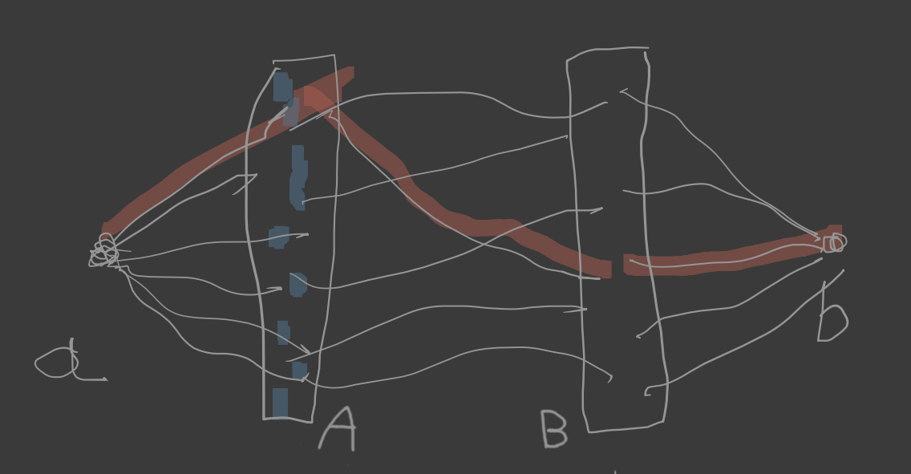
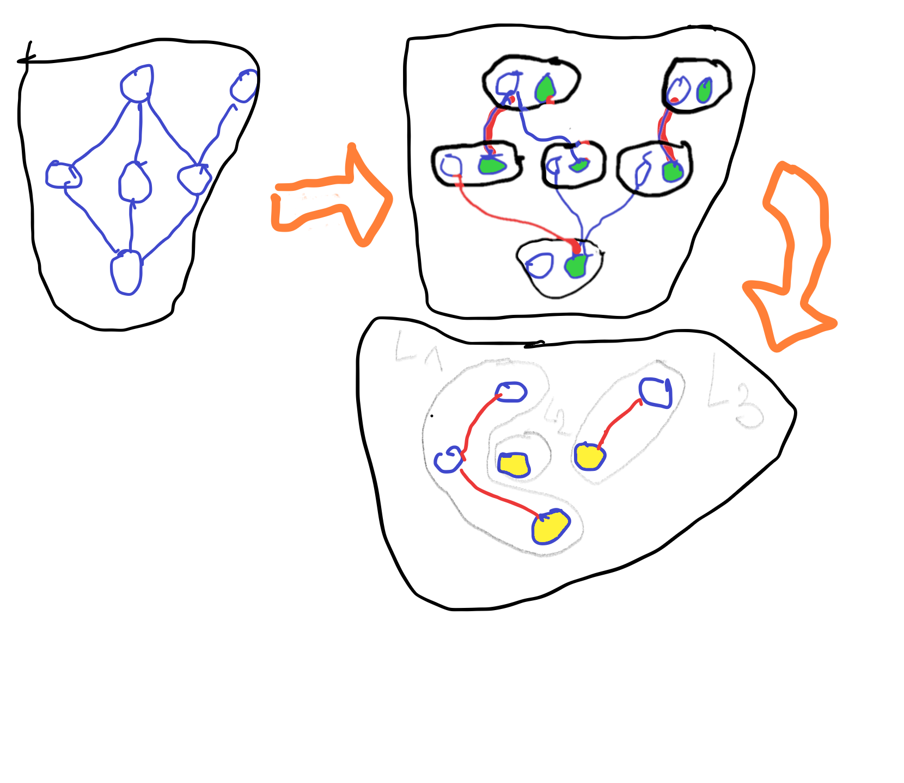

2020-04-29
Twierdzenia Mengera są prawdziwe dla dowolnego grafu!
Pełnym skojarzeniem (z \(C\) do \(D\)) w grafie dwudzielnym \(G = G(D,C)\) nazywamy dowolną różnowartościową funkcję \(f: D \to C\) taką, że \((\forall x\in D)(\{x, f(x)\} \in E(G))\).
Niech \(G = G(D,C)\) będzie grafem dwudzielnym. Dla \(X\subseteq D\) określamy \[ \mathcal{N}(X) = \{y\in C: (\exists x \in X)(\{x,y\} \in E(G))\} \]
Jeśli istnieje pełne skojarzenie w grafie dwudzielnym \(G = G(D,C)\), to dla dowolnego \(X \subseteq D\) mamy \(|X| \le |\mathcal{N}(X)|\).
Niech \(G = G(A,B)\) będzie grafem dwudzielnym.
\(\circlearrowright\): 1. Istnieje pełne skojarzenie w grafie \(G\) z \(A\) do \(B\) 2. \((\forall X \subseteq A)(|X| \le |\mathcal{N}(X)|)\)
Wiemy już, że \((1) \implies (2)\). Zajmijmy się odwrotną implikacją.
Załóżmy więc, że \((2)\) jest prawdziwa. Rozważamy następujący graf \(G'\): jego wierzchołkami są zbiory \(A\cup B\cup \{a,b\}\) (\(a\) i \(b\) są jakimiś elementami nie należącymi do \(A \cup B\)); jego krawędziami jest zbiór \[ E(G) \cup \big\{ \{a,x\}: x\in A \big\} \cup \big\{ \{y,b\}: y \in B \big\}. \] 
Claim: każdy \((a,b)\)–separator w grafie \(G'\) ma moc \(\ge |A|\)
Niech \(X\) będzie \((a,b)\)–separatorem.
Wówczas: \[
|A| = |A \cap X| + |A \setminus X| \le |A \cap X| + |\mathcal{N}(A\setminus X)|\\
\le |A\cap X| + |B\cap X| = |X|.
\] Zbiór \(A\) jest \((a,b)\)–separatorem. Zatem najmniejsza moc separatora to \(|A|\). Na mocy twierdzenia Mengera istnieje zbiór wewnętrznie rozłącznych \((a,b)\)–ścieżek mocy \(|A|\). Z tego zbioru otrzymujemy pełne skojarzenie.
Skojarzeniem w grafie \(G\) nazywamy dowolny zbiór krawędzi \(\mathcal{E}\subseteq E(G)\) taki, że \((\forall e,f \in \mathcal{E})(e\neq f\implies e\cap f =\emptyset)\).
\(\nu(G) = \max\{|\mathcal{E}|: \mathcal{E}\text{ jest skojarzeniem w } G\}\)
Pokryciem wierzchołkowym grafu \(G\) nazywamy dowolny zbiór wierzchołków \(A\subseteq V(G)\) taki, że \((\forall e\in E(G))(e \cap A\neq\emptyset)\).
\(\tau(G) = \min\{|A|: A\text{ jest pokryciem wierzchołkowym } G\)
\(\nu(G) \le \tau(G) \le 2\nu(G)\)
Niech \(\mathcal{E}\) będzie dowolnym skojarzeniem zaś \(A\) dowolnym pokryciem. Wówczas dla każdej krawędzi \(e \in \mathcal{E}\) istnieje \(a_e \in A\cap e\). Z rozłączności krawędzi ze skojarzenia wynika, że odwzorowanie \(e\to a_e\) jest różnowartościowe.
Zatem \(|\mathcal{E} \le |A|\). To dowodzi pierwszej nierówności.
Rozważmy teraz skojarzenie \(\mathcal{E}\) o największej mocy. Niech \(A = \bigcup\mathcal{E}\). Wówczas \(|A| = 2\nu(G)\). Ponadto \(A\) jest pokryciem, bo dla dowolnej krawędzi \(e\) mamy \(e\cap A \neq \emptyset\) (to wynika z maksymalności \(\mathcal{E}\)).
A to pokazuje drugą nierówność.
Jeśli \(G\) jest grafem dwudzielnym, to \(\nu(G) = \tau(G)\).
Niech \(G = G(X,Y)\). Zastosujemy twierdzenie Mengera do zbiorów \(A = X\) i \(B = Y\).
Każde skojarzenie w \(G\) definiuje rodzinę parami rozłącznych \((A,B)\)–ścieżek. I odwrotnie: każda rodzina parami rozłącznych \((A,B)\)–ścieżek generuje skojarzenie.
Bierzemy zbiór \(\mathcal{P}\) wierzchołkowo rozłącznych \((A,B)\)–ścieżek największej mocy, którą oznaczamy przez \(k\). Z twierdzenia Mengera wynika istnienie \((A,B)\)–separatora mocy \(k\). Każdy separator przecina każdą krawędź.
Istnieje więc pokrycie wierzchołkowe mocy \(k\).
Niech \(\mathcal{X} = (X,\preceq)\) będzie częściowym porządkiem. 1. Podzbiór \(L\subseteq X\) nazywamy łańcuchem w \(\mathcal{X}\) jeśli \((\forall x,y \in L)(x\preceq y\lor x=y \lor y\preceq x)\) 2. Podzbiór \(A\subseteq X\) nazywamy antyłańcuchem w \(\mathcal{X}\) jeśli \((\forall x,y \in A)(x\neq y \implies (\neg(x\preceq y)\land \neg(y\preceq x)))\)
Jeśli \(L\) jest łańcuchem oraz \(A\) jest antyłańcuchem, to \(|A\cap L| \le 1\).
Jeśli \(\mathcal{L}\) jest rozbiciem \(X\) na łańcuchy i \(A\) jest antyłańcuchem, to \(|A| \le |\mathcal{L}|\)
Dla dowolnego skończonego częściowego porządku \(\mathcal{X} = (X,\preceq)\) następujące dwie liczby są równe: 1. \(\min\{|\mathcal{L}|: \mathcal{L}\text{ jest rozbiciem }X\text{ na łańcuchy}\}\) 2. \(\max\{|A|: A\text{ jest antyłańcuchem w }\mathcal{X}\}\)
Niech \(\mathcal{X} = (X,\preceq)\) będzie częściowym porządkiem. Definiujemy graf \(G(V,E)\):
\(V = \{x^-:x\in X\}\cup\{x^+:x\in X\}\)
\(E = \big\{\{x^+,y^+\}: x\prec y\big\}\)
 To jest graf dwudzielny. Znajdujemy skojarzenie \(M\) największej mocy \(k\) (krawędzie czerwone, druga część rysunku, tutaj \(k=3\)). Powracamy do wyjściowego częściowego porządku (trzecia część rysunku). Otrzymujemy rozbicie \(\mathcal{L}\) na zbiorze \(X\) na łańcuchy. Niech \(C\) będzie zbiorem najmniejszych elementów w tych łańcuchach.
Wówczas \(|X \setminus C| = |M|\) oraz, oczywiście, \(|C| = |\mathcal{L}|\).
Zatem \(|\mathcal{L}| = |X| - |M| = |X| - k\).
Na mocy twierdzenia Königa mamy pokrycie wierzchołkowe \(A\) grafu \(G\) mocy \(k\).
Niech \(B = \{x\in X: x^+\in A\lor x^-\in A\}\). Wówczas \(|B| \le |A| = k\).
Claim: \(X\setminus B\) jest antyłańcuchem.
Załóżmy, że \(x,y\in X\setminus B\) oraz \(x\neq y\). Gdyby \(x\prec y\), to \(\{x^+,y^-\}\in E\), więc \(\{x^+,y^-\}\cap A \neq \emptyset\), więc \(x \in B \lor y \in B\). Podobnie, nie jest możliwe aby \(y\prec x\)
Zbiór \(C = X\setminus B\) jest więc antyłańcuchem w \(\mathcal{X}\), oraz \[ |C| = |X\setminus B| = |X| - |B| \ge |X| - k. \] Zatem istnieją rozbicie \(\mathcal{L}\) na łańcuchy oraz antyłańcuch \(C\) takie, że \(|C|\ge|\mathcal{L}|\), co kończy dowód.
Typowe użycie twierdzenie Dilwortha: rozważamy częściowy porządek na zbiorze \(X = \{1,\dots,n\} \times \{1,\dots,n\}\) określony wzorem: \[ (x,y) \preceq (x', y') \leftrightarrow (x\le x') \land (y\le y') \]
Jaka jest moc największego antyłańcucha?
example
Na pierwszym rysunku mamy antyłańcuch mocy \(n\) (czerwone kropki)
Na drugim rysunku mamy rozbicie na \(n\) łańcuchów (różne kolory). Wiemy, że \(\max\{\text{antyłańcuch}\} = \min\{\text{rozbicie}\}\), więc w naszym przykładzie mamy \[
n \le \max\{\text{antyłańcuch}\} = \min\{\text{rozbicie}\} \le n
\] więc największa moc antyłańcucha jest równa \(n\).
Czyli: metoda ta polega na znalezieniu antyłańcucha i rozbicia na łańcuchy tej samej mocy.
Zadanie: Rozwiąż to zadanie bez korzystania z twierdzenie Dilwortha.
Spójrzmy na ostatni przykład bardziej abstrakcyjnie. Załóżmy, że mamy dwa zbiory \(A\) i \(B\) oraz na funkcje \(f: A\to \mathbb{R}\) i \(g: B\to \mathbb{R}\). Załóżmy, że wiemy, że: \[ \Big(~ \max\{f(a): a\in A\} \le \min\{g(b): b\in B\} ~\Big) \equiv (*) \] (czyli \((\forall a\in A)(\forall b \in B)(~f(a)\le g(b)~)\)).
Załóżmy ponadto, że udało nam się wskazać na dwa obiekty \(a_0 \in A\) oraz \(b_0 \in B\) takie, że \(f(a_0) = g(b_0)\).
Wówczas: \[
f(a_0) = \max\{f(a): a\in A\} = \min\{g(b): b\in B\}
\] A z warunkami typu \((*)\) mieliśmy już kilka razy do czynienia. Na przykład, twierdzenie Mengera można zapisać skrótowo jako \(\max\{|P|: P\text{ jest }(A,B)\text{-ścieżką}\} = \min\{|C|: C\text{ jest }(A,B)\text{-separatorem}\}\) (przy czym nierówność \(\le\) jest oczywista), zaś twierdzenie Königa jako \(\max\{|L|: L\text{ jest skojarzeniem}\} = \min\{|A|: A\text{ jest pokryciem}\}\) (gdzie nierówność \(\le\) jest ponownie oczywista).